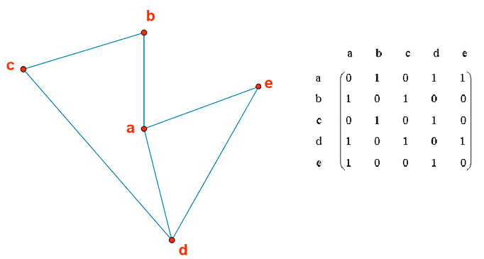
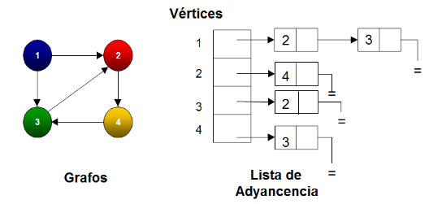

Representación de Grafos
Los grafos pueden representarse de varias maneras, cada una con sus propias ventajas y aplicaciones específicas. Las representaciones más comunes son las matrices y las listas de adyacencia:
Matrices de Adyacencia

Una matriz de adyacencia es una tabla de tamaño NxN donde N es el número de vértices. Cada entrada en la matriz indica si existe una arista entre dos vértices específicos. Es útil para grafos densos donde la mayoría de los pares de vértices están conectados.
Listas de Adyacencia

En una lista de adyacencia, cada vértice tiene una lista asociada que contiene los vértices a los que está conectado. Esta representación es eficiente en términos de espacio para grafos dispersos donde hay pocas conexiones entre vértices.
Grafos Ponderados

En los grafos ponderados, las aristas tienen un peso asociado. Tanto en matrices como en listas de adyacencia, estos pesos pueden ser almacenados para representar la relación entre los nodos. Este tipo de grafo es útil en aplicaciones como la optimización de rutas y análisis de redes.
Cada una de estas representaciones ofrece diferentes ventajas dependiendo del tipo de grafo y del problema que se esté tratando de resolver.
Análisis de Redes Sociales
La teoría de grafos se utiliza ampliamente para estudiar y analizar redes sociales. En este contexto, los nodos representan a las personas, cuentas o entidades dentro de una red social, mientras que las aristas representan las conexiones entre ellos, como amistades, seguidores o interacciones. Aquí te explico algunas de sus aplicaciones más importantes:
1. Identificación de comunidades
Con la teoría de grafos, es posible detectar comunidades o grupos dentro de una red social que tienen conexiones más fuertes entre sí que con el resto de la red. Esto se logra mediante algoritmos como el de Louvain o Girvan-Newman.
Ejemplo: Identificar grupos de usuarios con intereses comunes en plataformas como Facebook o Twitter.
2. Análisis de influencia
Se pueden determinar los nodos más influyentes en una red social utilizando métricas como el grado de centralidad, la centralidad de intermediación (betweenness) o la centralidad de cercanía. Estos nodos son actores clave que pueden impactar significativamente en la difusión de información.
Ejemplo: Identificar a los influenciadores clave en una campaña de marketing digital.
3. Difusión de información
La teoría de grafos permite modelar cómo se difunde la información o los comportamientos a través de una red social. Esto es especialmente útil para analizar la propagación de noticias, memes o incluso rumores.
Ejemplo: Estudiar cómo se viraliza un video en YouTube a través de las conexiones entre usuarios.
4. Detección de anomalías
Con grafos, es posible identificar patrones inusuales en una red social, como la aparición de cuentas falsas o actividades sospechosas. Esto se hace analizando propiedades estructurales de los nodos y sus conexiones.
Ejemplo: Detectar bots automatizados en redes sociales como Instagram o Twitter.
5. Recomendación de conexiones
Los grafos se usan para sugerir nuevas conexiones entre usuarios en función de la similitud de sus redes. Esto se basa en conceptos como los amigos en común o la probabilidad de enlace.
Ejemplo: La función "Personas que quizá conozcas" en LinkedIn se basa en estos principios.